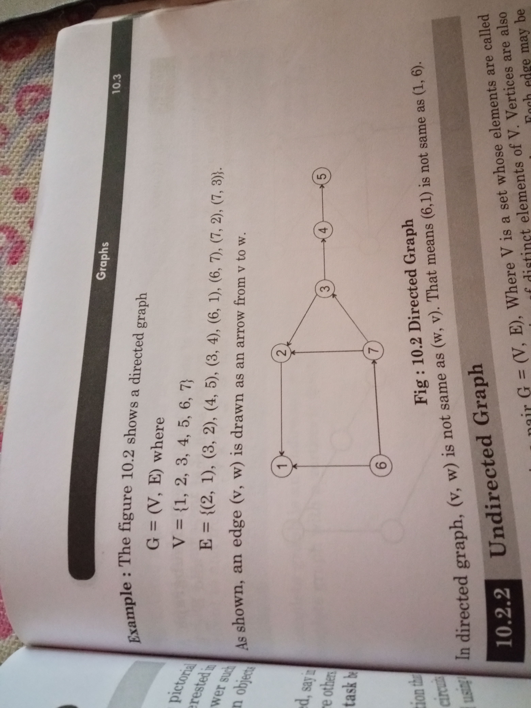
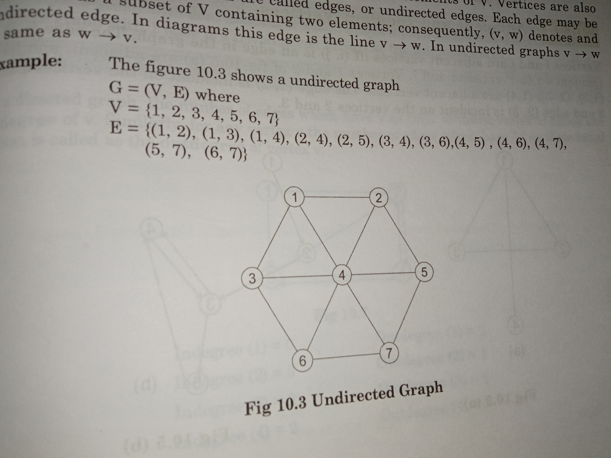
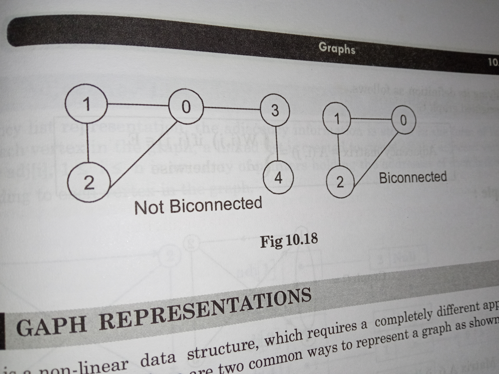
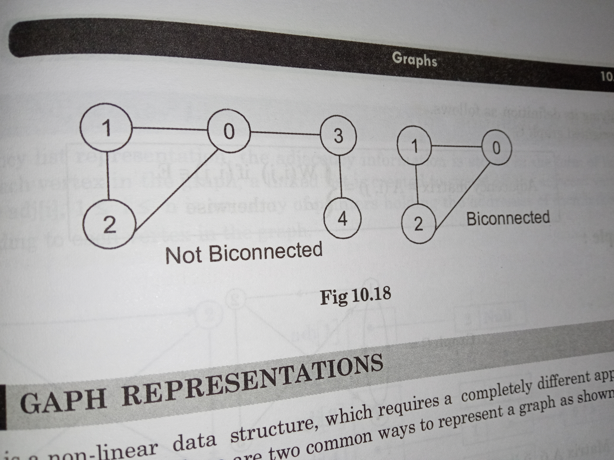
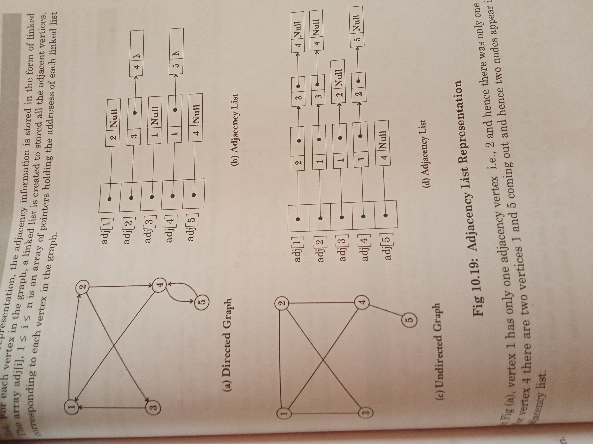
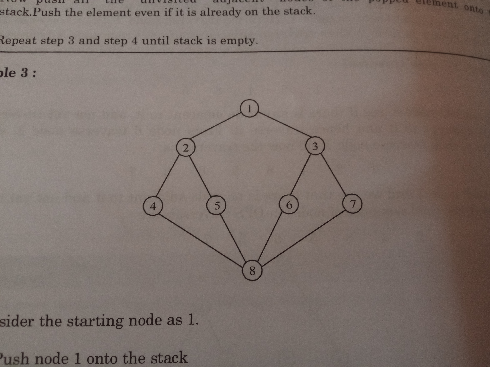
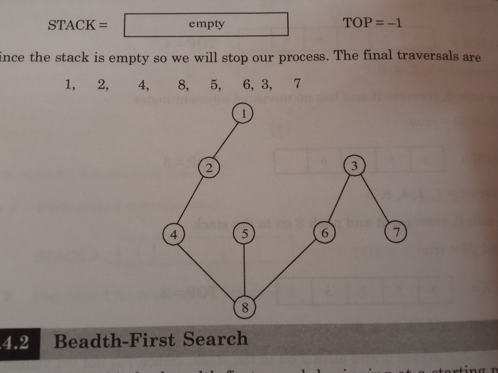
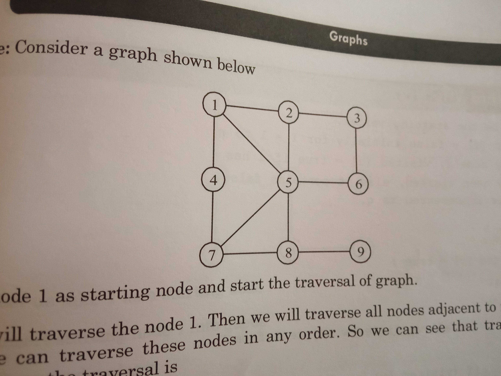
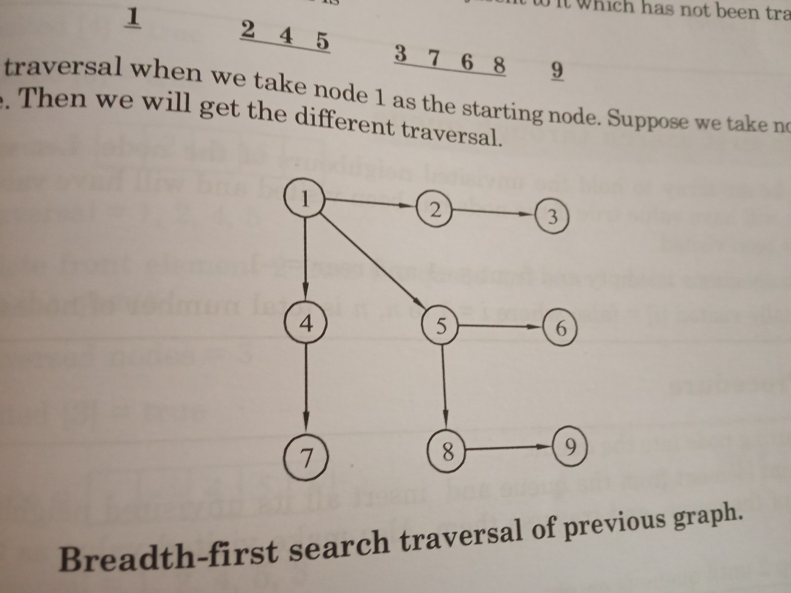

Graphs
Used in
- shortest routes [ no weights ]
- Fastest routes [ weights ]
- Job scheduling [ especially when few jobs have dependencies ]
- Designing reliable nw [ no articulation points , or alteast minimum ]
Graphs are a set of finite points called vertices or nodes.
Some of them are connected to others via lines or arrows called edges or arcs
Types
Based on connection
- Complete Graphs
- Has an edge from all points to all points
- Has
n(n-1)/2 edges
- if zero nodes, a trivial graph
null graph exists
- if one node, a trivial graph
singleton graph exists
- Connected Graphs
- Has a path between every pair of vertices
- A path is a sequence of vertices where each consequetive pair is connected by an edge.
- Number of edges in a path is called as the
length of the path
- if there are no repeated vertices -
Simple path
NOTE: If a graph has an edge bw every pair of vertices: if its direct edge: complete , indirect : connected graphs.
- If its a
digraph - strongly connected graph
- If its an
undirected graph - connected graph
Unfortunately undirected graph cannot be a strongly connected graph. . .
Ikr it ain't its mistake - it just has ability which is termed as disability here .
It is essential for a strongly connected graph to have DIRECTED edges towards and from all vertices in a graph
- If its a
digraph with one pair having one a sinlge directed edge between them - weekly connected graph
- ex:

- Bi-Connected Graph
- A connected graph
- No articulation point in the graph
- Disconnected Graphs
- A graph where atleast one pair of vertices have no path connecting them.
- Graph with isolated vertices
- If there is one node/vertex such that it has no edges or arcs to any other node/vertex of the graph,
That node is isolated node .
Based on edges
- Directed Graph aka
Digraph
-
A graph whose edges are
directed / "one-way".
- Represented as G=(V,E)
V is a set, whose elements are called vertices or notesE is a set, whose elements are ordered pairs of elements of V, called edges or arcs- If exists, directed edge (v,e) .
v is called TAIL and e is called HEAD
v->w , which is distinct from w->v.
- Eg: 
- Unidirected Graph
-
A graph whose edges are
undirected / "two-way".
- Represented as G=(V,E)
V is a set, whose elements are called vertices or notesE is a set, whose elements are unordered pairs of distinctelements of V, called edges or arcs- If exists, undirected edge (v,e), denoted by v-w , same as w-v
- Eg: 
- SubGraph
- A graph whose vertices and edges are subset of another graph is called a subgraph
if G=(V,E) then subgraph could be
G1=(V1,E1)
Graphs that have weghts are called as weighted graphs else non weighted Graphs
A pair of vertices is said to be adjacent if and only if there is a edge between them , making e(v,w) for e,w being adjacent.
An egde is said to be incident if it is connected to that vertices , e(v,w) is incident on v,w
- These are only for directed graph
- Indegree
- The
number of edges having v as their terminal vertex is called indegree of v
- Outdegree
- The
number of edges having v as their initial vertex is called outdegree of v
- For outdegree graphs
- We just called it
degree - number of edges
Cyclic
A path of non-zero length with v as initial and final vertex.
These are called cyclic graphs else acyclic graph
If no vertices are repeated - Simple Cycle
Loop
Single edge having connected to and from the same vertex
Generally
If a vertex has 0 indegree, we define it as the source vertex.
If a vertex has 0 outdegree, we define it as the sink vertex.
DAGs - Directed Acyclic Graphs
Articulation point
A vertex in an undirected connected graph is an articulation point if and only if removing it and edges throught it disconnects the graph.
Removing the articulation point could increase the number of connected components.
ex: 
BiConnected Graph
Properties
- There is a simple cycle throught any two vertices
- There exists two vertex-disjoint path between any two edges
The above are not to be satisfied for a Biconnected graph with only 2 nodes.But for more than 2 nodes.
ex:  ex: 
ex: 
Representation
Since a graph is a non-linear DS.
Representation are done in -
- Adjacency Matrix
- Adjacency List
- Path Matrix
Adjacency Matrix
- Has 'n' rows and 'n' columns
- It only contains of 0s and 1s .
- 1s where (i,j) has an edge.
- Therefore Adjacency Matrix only represent undirected edges.
- If the graph is weighted - we could replace
1 by its weight.And 0 by infinity.
Adjacency List
- Each node has a linked list that contains link to nodes that ONLY IT has an direct edge to
- ex: 
- In a directed list, where n is nodes and e is edges , n=e
- In undirected there are 2 nodes in list for every edge , therefore n=2*e
Path Matrix
- Same as Adjacency Matrix
- The values are updated even if an indirect edge i.e a path is found bw i,j
Traversal
- There is no first node or root node. Hence, traversal can start from any node
- [ unlike trees or list ] In a graph we only traverse to those nodes that are reachable from the initial node, so we have to keep changing our initial node to traverse all reachable paths
- [ unlike trees or list ] A single node can be visited more than once. Hence we keep track of
status of each node.
- [ unlike trees or lists ] Graphs have different sequences for the same technique of traversal.
OBV THOUGHT: ONLY connected graph traversal include all the nodes.
Depth-First-Search [Recursive or Iterative] [Stack]
- Uses stack
- Select a node
- Traverse on one direction untill reach
end
- if reach
end, go to init node
- Search for another path and repeat last 2 steps
- if no path - repeat from step 2
- Once all nodes are done
return
- Recursive uses implicity stack while iterative uses a user-defined stack, Learn about this.
- ex: 

Breadth First Search [queue]
Pick a node source
Traverse the neighbours of source Add it to the queue
Traverse the neighbours of neighbours of source Add it to the queue
Does backtrack just proceeds with the next node that was considered when first picking the neighbours [ i.e the next node in the queue ]
ex: 

Complexity
- Depends on the number of nodes and the representation used to store the graph
- For both BFS and DFS - [ n-nodes, e-edges ]
Time AND Space Complexity
- Adjacency Matrix
O(n2)- Adjacency List
O(n+e)
Chap11